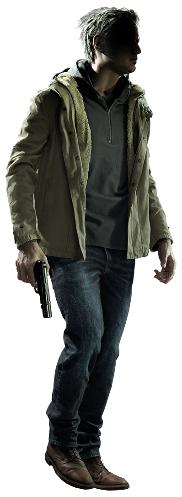
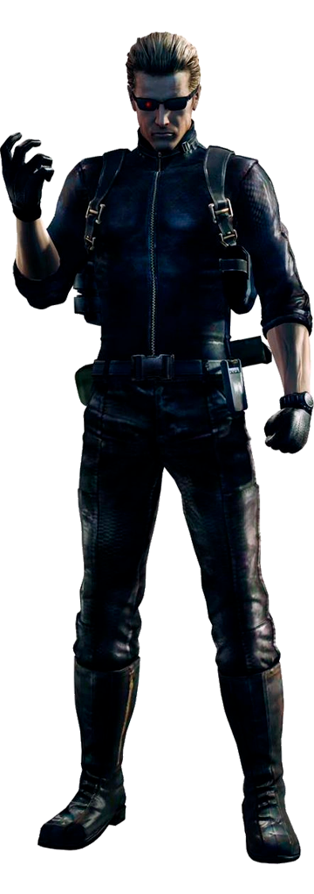
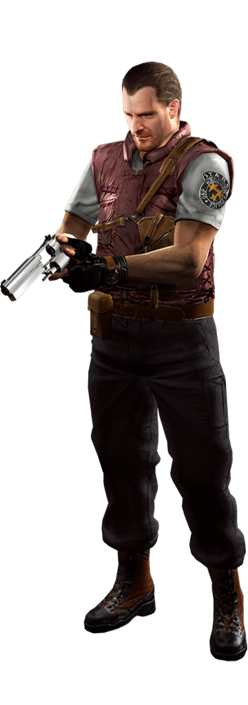
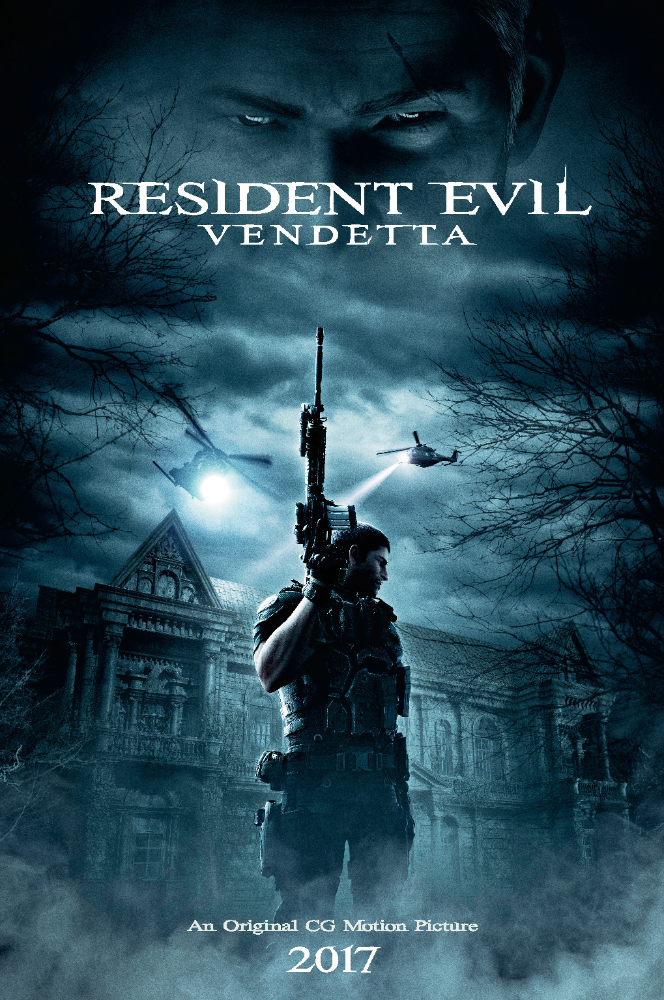
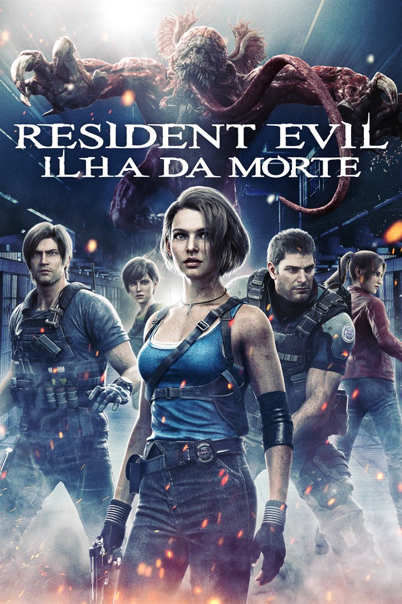

Resident Evil, conhecido como Biohazard no Japão, é uma franquia de mídia japonesa de propriedade da Capcom. A franquia incorpora uma série de jogos de survival horror, filmes, quadrinhos, romances e outros produtos licenciados. O primeiro jogo da série foi lançado em 1996, e desde então, Resident Evil se tornou uma das séries de jogos mais vendidas de todos os tempos. A história principal gira em torno de surtos de zumbis e outras criaturas causados por armas biológicas criadas pela sinistra corporação Umbrella.
Jogos
Resident Evil (1996)
O primeiro jogo da série, Resident Evil, introduz os personagens Chris Redfield e Jill Valentine, membros da equipe tática de elite S.T.A.R.S., que investigam uma série de assassinatos bizarros nos arredores de Raccoon City. Eles se encontram presos em uma mansão infestada por zumbis e outras criaturas, descobrindo que a Umbrella Corporation é a responsável pelos experimentos biológicos que causaram o surto.
Resident Evil 2 (1998)
Ambientado dois meses após o primeiro jogo, Resident Evil 2 segue Leon S. Kennedy, um policial novato, e Claire Redfield, irmã de Chris, enquanto tentam escapar de Raccoon City durante um surto de zumbis. O jogo revela mais sobre os experimentos da Umbrella Corporation e apresenta novos personagens e inimigos.
Resident Evil 3: Nemesis (1999)
Neste jogo, os jogadores controlam Jill Valentine enquanto ela tenta escapar de Raccoon City durante o mesmo surto de Resident Evil 2. O jogo introduz o Nemesis, uma criatura implacável criada pela Umbrella Corporation para eliminar os membros da S.T.A.R.S.
Resident Evil Code: Veronica (2000)
Este jogo segue Claire Redfield em sua busca pelo irmão Chris, levando-a a uma prisão na ilha Rockfort e depois à Antártica, onde ela descobre mais sobre os experimentos da Umbrella Corporation. Eventualmente, Chris se junta à batalha para salvar sua irmã.
Resident Evil Zero (2002)
Um prequel do primeiro jogo, Resident Evil Zero, segue Rebecca Chambers, uma nova recruta da S.T.A.R.S., e Billy Coen, um ex-militar condenado à morte. Eles investigam um trem infectado por um novo tipo de arma biológica, levando aos eventos do primeiro jogo.
Resident Evil 4 (2005)
Leon S. Kennedy retorna como protagonista, agora um agente do governo encarregado de resgatar a filha do presidente dos EUA, que foi sequestrada por um culto na Espanha. O jogo introduz um novo tipo de inimigo, os Ganados, e trouxe uma mudança significativa na jogabilidade, focando mais na ação.
Resident Evil 5 (2009)
Chris Redfield e sua nova parceira, Sheva Alomar, investigam um surto bioterrorista na África. Eles descobrem que a Umbrella Corporation e outras organizações continuaram os experimentos biológicos. O jogo é conhecido por seu modo cooperativo.
Resident Evil 6 (2012)
O jogo apresenta múltiplas campanhas entrelaçadas, seguindo personagens como Leon S. Kennedy, Chris Redfield, Ada Wong e Jake Muller. Eles lutam contra uma nova ameaça bioterrorista global, enfrentando zumbis e outras criaturas mutantes.
Resident Evil 7: Biohazard (2017)
Este jogo marca um retorno ao survival horror em primeira pessoa. Os jogadores controlam Ethan Winters, que está procurando sua esposa desaparecida, Mia, em uma mansão assombrada na Louisiana. Ele enfrenta a família Baker, que está infectada por um novo tipo de arma biológica.
Resident Evil Village (2021)
Uma continuação direta de Resident Evil 7, Ethan Winters retorna como protagonista, agora em busca de sua filha raptada. Ele explora uma vila misteriosa cheia de inimigos sobrenaturais, incluindo vampiros e lobisomens. O jogo combina elementos de ação e horror.
Personagens
Chris Redfield
Jill Valentine
Leon Scott Kennedy
Claire Redfield
Chris Redfield é um membro fundador da equipe S.T.A.R.S. e mais tarde se torna um dos principais agentes da BSAA. Ele é conhecido por sua força, habilidades de combate e determinação em combater ameaças bioterroristas.
Jill Valentine é uma ex-oficial da S.T.A.R.S. e uma das protagonistas da série Resident Evil. Ela é uma especialista em desarmar bombas e é conhecida por sua inteligência e habilidades de sobrevivência.
Leon S. Kennedy começou como um policial novato em Raccoon City e se tornou um agente especial do governo dos EUA. Ele é um dos personagens mais populares da série, conhecido por seu senso de justiça e habilidade em combate.
Claire Redfield é a irmã de Chris Redfield e uma das protagonistas da série. Ela é uma estudante universitária que se torna uma ativista, lutando contra as corporações que produzem armas biológicas.
Ethan Winters
Ada Wong
Albert Wesker
Barry Burton



Ethan Winters é o protagonista de "Resident Evil 7: Biohazard" e "Resident Evil Village". Um homem comum em busca de sua esposa desaparecida, Ethan é levado a enfrentar horrores inimagináveis em ambientes isolados e assombrados. Determinado e corajoso, ele se destaca por sua tenacidade e habilidades improvisadas em situações extremas, tornando-se um personagem central na saga de sobrevivência e mistério da série Resident Evil.
Ada Wong é uma personagem misteriosa e habilidosa da série Resident Evil, conhecida por suas habilidades em espionagem e combate. Introduzida pela primeira vez em "Resident Evil 2", Ada é uma agente secreta que muitas vezes trabalha por conta própria, envolvendo-se em conspirações da Umbrella Corporation e outros intrigantes enredos de bioterrorismo. Carismática e enigmática, Ada Wong é uma figura complexa cujas verdadeiras intenções frequentemente permanecem obscuras, adicionando camadas de intriga à narrativa da franquia.
Albert Wesker é um dos antagonistas centrais da série Resident Evil, conhecido por sua inteligência brilhante, carisma manipulador e habilidades sobre-humanas. Inicialmente apresentado como um membro da S.T.A.R.S. e amigo próximo de Chris Redfield e Jill Valentine, Wesker revela-se como um traidor que trabalha secretamente para a Umbrella Corporation. Ele é responsável por diversos eventos catastróficos envolvendo armas biológicas, mostrando-se um vilão implacável determinado a alcançar o poder absoluto através do controle do vírus T e de outras tecnologias avançadas. Sua presença sinistra e manipuladora continua a ser uma influência marcante ao longo da história da série.
Barry Burton é um personagem icônico da série Resident Evil, conhecido por sua lealdade e habilidades como especialista em armas de fogo. Ele é apresentado como um dos membros originais da equipe S.T.A.R.S., sendo um dos poucos sobreviventes do incidente na mansão nos eventos de "Resident Evil". Barry é retratado como um homem íntegro e protetor, especialmente em relação à sua filha, Moira Burton. Sua presença na série é marcada por momentos de bravura e apoio aos protagonistas, contribuindo para a narrativa com sua experiência e determinação em enfrentar os horrores criados pela Umbrella Corporation.
Animações
Resident Evil: Degeneração
Sete anos após a destruição de Raccoon City, um ataque de zumbis semeia terror no aeroporto de Harvardville. Os agentes secretos Leon S. Kennedy e Claire Redfield chegam ao local, prontos para enfrentar os zumbis furiosos.
Resident Evil: Condenação
Em "Resident Evil: Condenação", Leon S. Kennedy, um agente especial, é enviado para a fictícia Europa Oriental para investigar o uso ilegal de armas biológicas. Durante sua missão, ele descobre um complexo de pesquisa secreto onde a ameaça de vírus letais está sendo explorada de maneira descontrolada. Enquanto enfrenta zumbis e criaturas mutantes, Leon se une a aliados inesperados em uma corrida contra o tempo para impedir que o vírus se espalhe e cause uma catástrofe global.
Resident Evil: Vendetta

No filme, Chris Redfield, agora um agente da BSAA (Bioterrorism Security Assessment Alliance), une forças com Leon S. Kennedy, um agente habilidoso e experiente, e Rebecca Chambers, uma cientista especializada em vírus, para deter Glenn Arias, um empresário do mercado negro que planeja liberar um novo vírus mortal em Nova York.
Resident Evil: Ilha da Morte

Em São Francisco, Jill Valentine enfrenta um surto de zumbis e um novo T-Virus. Enquanto isso, Leon Kennedy está na trilha de um cientista DARPA sequestrado, e Claire Redfield investiga um peixe monstruoso que está matando baleias na baía. Acompanhados por Chris Redfield e Rebecca Chambers, eles descobrem que as pistas de seus casos separados convergem para o mesmo local: a Ilha de Alcatraz. Lá, um novo mal se estabeleceu e aguarda sua chegada.